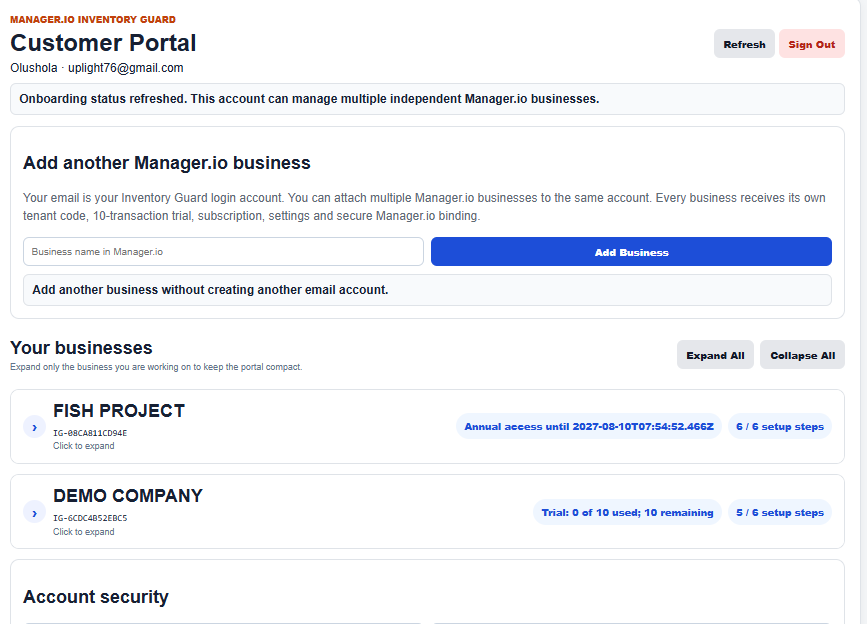
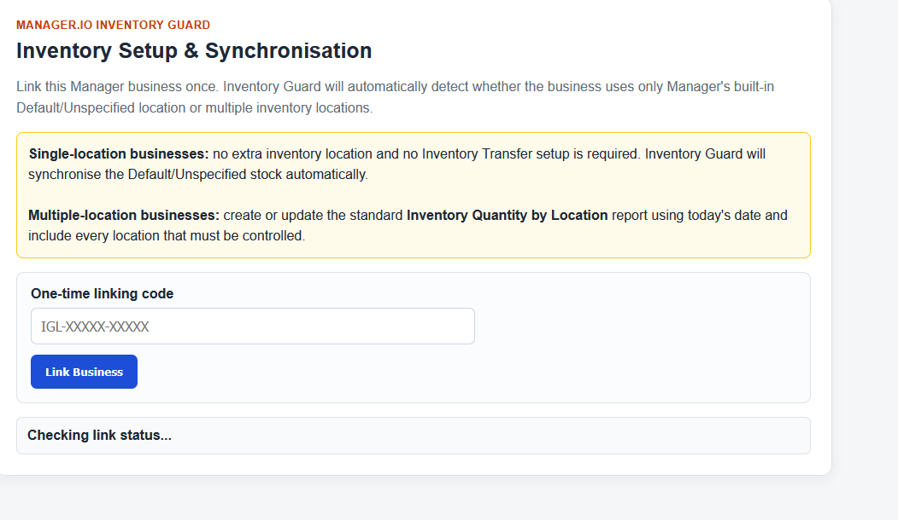
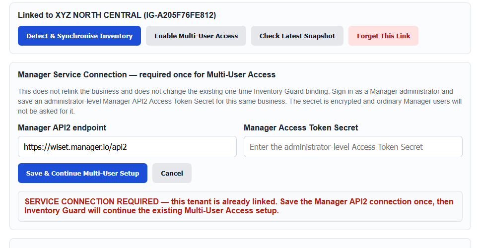
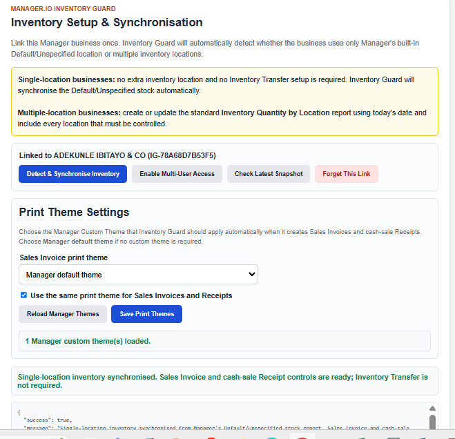
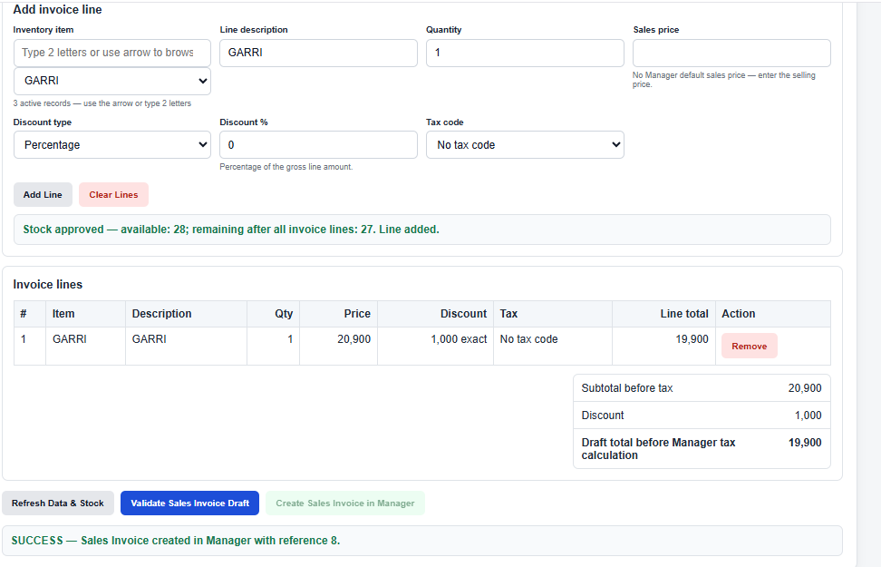

SI
Controlled Sales Invoice
Checks inventory availability, customer credit exposure and locked sales prices before creating the Sales Invoice in Manager.
Manager.io Inventory Guard adds controlled Sales Invoices, cash-sale Receipts and Inventory Transfers, while enforcing stock availability, locked sales prices, customer credit limits and bypass monitoring.
Continue using Manager.io while Inventory Guard adds the preventive controls and audit trail around stock-sensitive transactions.
Checks inventory availability, customer credit exposure and locked sales prices before creating the Sales Invoice in Manager.
Prevent cash-sale quantities from pushing inventory negative while still posting the Receipt into Manager.
For multi-location businesses, validate source stock before moving inventory between Manager locations.
Use the customer's Manager credit position to hard-block a Sales Invoice that would exceed the configured credit limit.
When a Manager inventory item has a default sales price, Inventory Guard automatically uses and protects that price.
Detect transactions created directly in Manager, controlled records later changed, and records deleted or missing from Manager.
Follow these steps in order for each Manager.io business. The one-time Inventory Guard linking code and the Manager Access Token Secret are different credentials created in different places.
Open Start Free Trial. Enter your contact name, the exact business name used in Manager.io, email, phone/WhatsApp and a password. If your email already has an Inventory Guard account, sign in with the same password and use Add another Manager.io business. Each business still receives its own tenant, trial, subscription and Manager connection.

Expand the business you are setting up. In its Connect & detect inventory mode section, click Generate Linking Code and copy the code. The code is single-use, expires and belongs only to that Manager.io business.
In the same Manager.io business, go to Settings → Custom Buttons. Create Inventory Setup & Synchronisation using the Inventory Guard /extension/location-sync endpoint and place it under Settings. Open it, paste the one-time linking code from Step 2 and click Link Business.

Still signed in to the same Manager.io business as an administrator, go to Settings → Access Tokens and create an Access Token for Inventory Guard. Copy the Access Token Secret supplied by Manager. This is not your Manager login password and must be kept confidential.

Return to Inventory Setup & Synchronisation. Enter the business's Manager API2 endpoint — normally the Manager cloud address followed by /api2 — and paste the Access Token Secret. Click Save & Continue Setup. Inventory Guard encrypts the Secret per tenant and does not display the saved Secret again.
Click Detect & Synchronise Inventory. Inventory Guard checks whether the business uses only Manager's Default/Unspecified location or has active custom inventory locations. A single-location business can synchronise immediately. A multi-location business must have the standard Inventory Quantity by Location report available.

In Manager.io, create or update the standard Inventory Quantity by Location report using today's date. Make sure every active inventory location that must be controlled is included. This report is the location-by-location baseline Inventory Guard uses for a multi-location business. SINGLE_LOCATION businesses skip this step.

After creating or updating the report, reopen Inventory Setup & Synchronisation and click Detect & Synchronise Inventory again. Inventory Guard opens the current report, imports the location balances and saves the successful snapshot. Do not proceed until the synchronisation reports success.
Return to the Customer Portal and click Refresh. The business card now shows only the controls required for the detected inventory mode. Add each business-specific URL to Manager.io using the placement shown. Inventory Transfer appears only for MULTI_LOCATION businesses. When you click a Copy button, it confirms success by briefly changing to “Copied ✓”.
After the required Custom Buttons are installed, return to Inventory Setup & Synchronisation and click Secure Business & Enable Multi-User Access. Inventory Guard writes the secure business-specific binding into the installed controls. The business is linked once; ordinary users do not need to relink it.
Open the Bypass & Integrity Monitor and initialise the baseline only after confirming the existing Manager records are acceptable. Thereafter use Controlled Sales Invoice, Controlled Cash Sale Receipt and, where applicable, Controlled Inventory Transfer. Inventory Guard validates stock before creation and applies the configured price and customer-credit controls.

The integrity monitor can identify covered transactions entered directly in Manager and controlled records later changed or deleted. Each business receives 10 successful controlled transactions free. When the trial is exhausted, activate or renew the annual subscription for that business. Trial usage does not reset when annual access starts.

There is no need for a new email for every Manager.io business. One customer account can own multiple independent businesses, each with its own secure Inventory Guard setup.
After setup, ordinary users do not need to relink the business.
These screenshots are from the tested production workflow. Click any image to enlarge it.

Inventory availability, credit control and locked sales-price protection before Manager creation.
Link the business, detect its inventory mode and install secure business-specific controls.

One login can manage multiple independent Manager.io businesses, trials and subscriptions.

Review direct Manager bypasses, changed records and missing/deleted controlled records.
Businesses that need a simple preventive control against selling more stock than is available.
Organisations moving stock among locations and requiring source-location availability checks.
Professionals managing multiple Manager.io businesses under one Inventory Guard customer account.
Teams that need customer credit policies enforced before another Sales Invoice is created.
Companies where restricted Manager users should use Inventory Guard without being granted wider permissions.
Businesses that want evidence when users bypass the controlled workflow or alter records afterward.
Each registered Manager.io business has its own trial and annual subscription.
Payment and renewal are completed through the Inventory Guard subscription flow using Selar. Assisted/direct payment activation is also supported where arranged by the administrator.
Contact the Adib Tech Team for onboarding guidance, Manager.io setup assistance and Inventory Guard support.
+234 803 567 4941
Get help with linking, inventory synchronisation, secure controls, transaction issues and subscriptions.
Chat on WhatsAppadek4971@gmail.com
Send technical enquiries, screenshots or onboarding questions to the support team.
Send EmailCreate your Inventory Guard account, add your Manager.io business and follow the guided setup.
{kind=link}
{kind=link}
{kind=link}
{kind=link}
{kind=link}